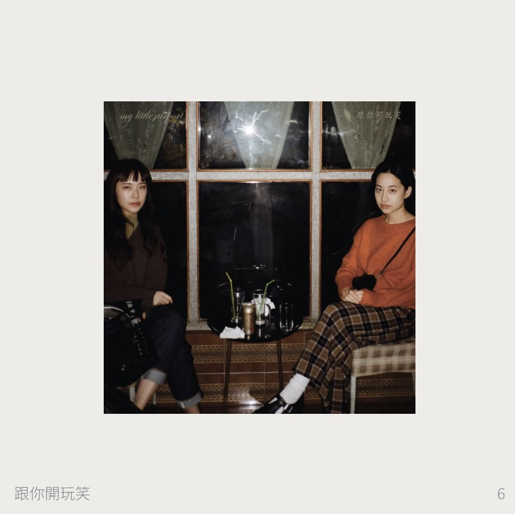

美麗新香港
D \ 2024年8月1日
這世界只有一種鄉愁美麗新香港——my little airport
就是沒有你的時候
這香港已不是我的地頭
就當我在外地旅遊

抛除政治色彩，我还是认可这是个可爱的组合，他们的歌词真诚，比较写实，基于生活与成长的叙事是他们的特色。主唱Nicole唱在動物園散步才是正經事，无比的青春可爱。失落沮喪歌里唱 我又有心事，自從看了太宰治[1]，也莫名的可爱。08年发行的《為你含情》（的确很大胆猛烈），有首畢業變成失業，很难说不对呢。 他们十分具体的描述生活场景和感受，绝不使人落入脱离实际的空想，这样生活化的气息给我带来安慰，甚至有时候他们唱 讓我喝一杯會吐血的香檳[2]、來到世上的意義是為了抗衡[3]也同样安慰了我。文化有时候挺烦人的，有认同感的同时就已经树立起来了排除异己的屏障。 然后现在，我也只想回到我的山洞裡， 再也不想隨便相信人類[4]。一旦清醒看见了洞穴以外，就难以接受曾是山洞里的人，难以承受清醒带来的痛苦。